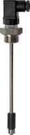
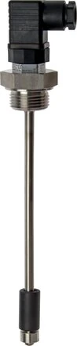
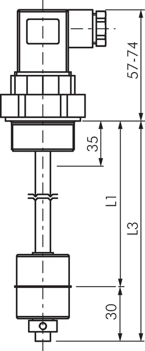

Bảo vệ & cảnh báo
Đóng/cắt theo ngưỡng áp, lưu lượng hoặc mức để bảo vệ bơm, máy nén, hệ thống.
Fast Group Engineering hỗ trợ mua WIKA FULLSTW 1SP 10-200 chính hãng: báo giá nhanh, kiểm tra thời gian cấp hàng và chuẩn bị chứng từ theo nhu cầu thực tế của nhà máy.



WIKA FULLSTW 1SP 10-200 là công tắc báo mức - dạng compact, mức (1x), G 1". Khi nhận RFQ, Fast Group đối chiếu part number, dải đo, kiểu ren và biến thể phù hợp trước khi báo giá; đồng thời hỗ trợ kiểm tra nguồn hàng và chuẩn bị hóa đơn, CO/CQ hoặc hồ sơ kỹ thuật theo yêu cầu.
Đối chiếu các thông số dưới đây với thiết bị đang lắp hoặc bản vẽ kỹ thuật trước khi đặt hàng.
WIKA FULLSTW 1SP 10-200 là công tắc báo mức - dạng compact, mức (1x), G 1". Khi nhận RFQ, Fast Group đối chiếu part number, dải đo, kiểu ren và biến thể phù hợp trước khi báo giá; đồng thời hỗ trợ kiểm tra nguồn hàng và chuẩn bị hóa đơn, CO/CQ hoặc hồ sơ kỹ thuật theo yêu cầu.
WIKA là thương hiệu thiết bị đo hàng đầu của Đức (WIKA Germany). Fast Group là nhà cung cấp, đại lý phân phối WIKA tại Việt Nam, hỗ trợ mua WIKA FULLSTW 1SP 10-200 chính hãng, báo giá WIKA nhanh và đặt hàng theo đúng part number. Khi cần mua đồng hồ, cảm biến hay thiết bị đo WIKA chính hãng ở Việt Nam, bạn có thể gửi mã hoặc ảnh nameplate để chúng tôi đối chiếu và tư vấn mã đúng.
Đóng/cắt theo ngưỡng áp, lưu lượng hoặc mức để bảo vệ bơm, máy nén, hệ thống.
Chịu rung, va đập, môi trường khắc nghiệt; ngõ ra relay/transistor linh hoạt.
Kích hoạt bơm/van theo điều kiện quá trình, giảm can thiệp thủ công.
Fast Group là nhà cung cấp WIKA tại Việt Nam. Gửi part number, số lượng và thời gian cần hàng, chúng tôi kiểm tra nguồn hàng và báo giá WIKA FULLSTW 1SP 10-200 nhanh, kèm phương án mã thay thế nếu cần.
WIKA FULLSTW 1SP 10-200 thuộc dòng công tắc báo mức - dạng compact, mức (1x), ren G 1". Fast Group xác nhận lại theo mã đầy đủ trước khi báo giá.
Đúng, WIKA là thương hiệu thiết bị đo của Đức. Fast Group cung cấp WIKA FULLSTW 1SP 10-200 chính hãng kèm CO/CQ, datasheet và hồ sơ kỹ thuật theo yêu cầu.
Có. Gửi mã cũ hoặc ảnh nameplate, Fast Group đối chiếu và đề xuất biến thể WIKA tương đương gần nhất về dải đo, ren và vật liệu.
Cần dải đo hoặc kích thước khác? Xem nhanh các biến thể cùng dòng và gửi RFQ theo mã phù hợp.
Chọn công tắc áp suất điện tử cho môi trường khắc nghiệt.
Nguyên lý công tắc giám sát lưu lượng.
Các thông số cần gửi khi RFQ thiết bị đo.